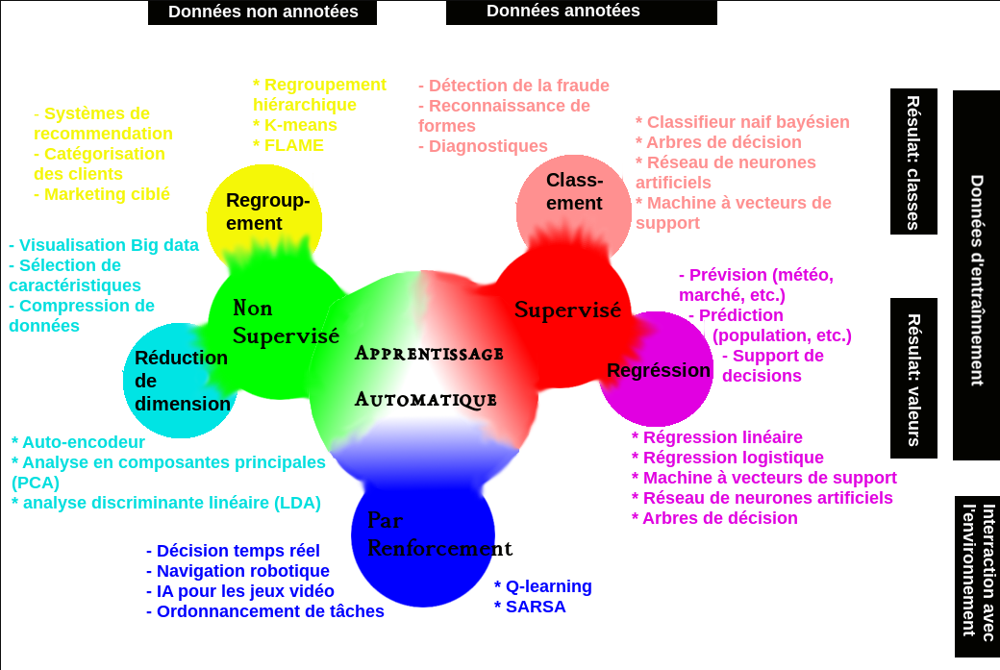
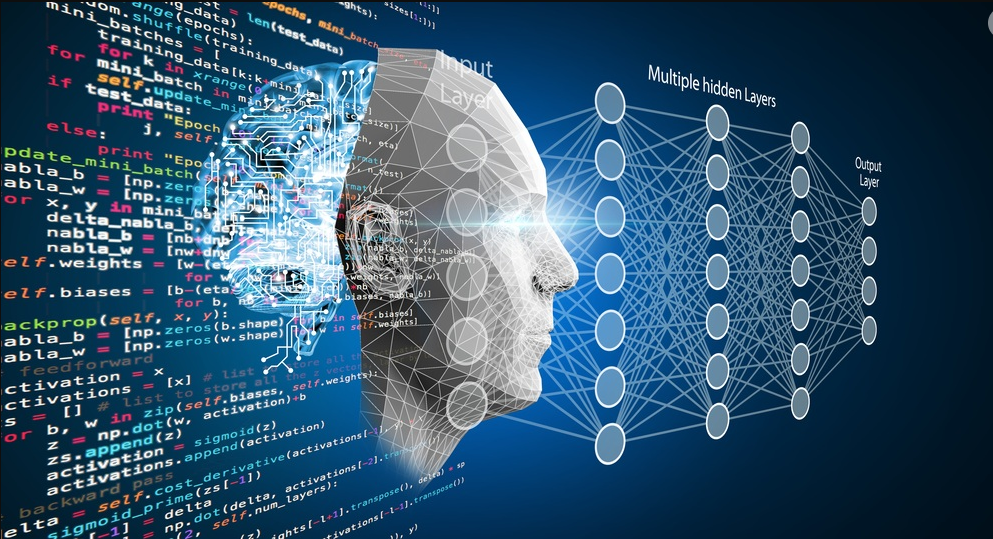

Intelligence Artificielle (IA)
L'intelligence artificielle (IA) est un vaste domaine de l'informatique qui ambitionne de créer des machines et des systèmes capables de réaliser des tâches qui nécessiteraient normalement l'intelligence humaine. Cela englobe un large éventail de capacités, telles que :
- L'apprentissage : Acquérir des connaissances et des compétences à partir de données ou d'expériences.
- La résolution de problèmes : Trouver des solutions à des défis complexes.
- La perception : Interpréter le monde à travers les sens (vision, audition, etc.).
- La compréhension du langage naturel : Traiter et comprendre le langage humain (écrit ou parlé).
- La prise de décision : Choisir une action parmi plusieurs options possibles, souvent dans des conditions d'incertitude.
L'IA ne se limite pas à reproduire l'intelligence humaine ; elle cherche aussi à la dépasser dans certains domaines spécifiques. On distingue souvent l'IA "faible" ou "étroite", spécialisée dans une tâche particulière (ex: un moteur de recommandation), de l'IA "forte" ou "générale", qui posséderait des capacités cognitives comparables à celles d'un humain dans tous les domaines (encore largement théorique).
Machine Learning (Apprentissage Automatique)
Le Machine Learning (ML), ou apprentissage automatique, est un sous-domaine crucial de l'IA. Son principe fondamental est de permettre aux ordinateurs d'apprendre à partir de données sans avoir été explicitement programmés pour chaque tâche. Au lieu de suivre des instructions spécifiques codées par des humains pour résoudre un problème, les algorithmes de ML utilisent des données pour "entraîner" un modèle. Ce modèle peut ensuite identifier des motifs (patterns), faire des prédictions, ou prendre des décisions basées sur de nouvelles données qu'il n'a jamais rencontrées auparavant.
Il existe plusieurs types d'apprentissage automatique :
- Apprentissage supervisé : Le système apprend à partir de données étiquetées (c'est-à-dire où la "bonne réponse" est fournie). Par exemple, pour reconnaître des images de chats, on lui fournit des milliers d'images en précisant lesquelles sont des chats et lesquelles ne le sont pas.
- Apprentissage non supervisé : Le système explore des données non étiquetées pour y découvrir des structures ou des relations cachées. Par exemple, regrouper des clients aux comportements d'achat similaires.
- Apprentissage par renforcement : L'agent apprend en interagissant avec un environnement. Il reçoit des récompenses ou des punitions en fonction de ses actions, ce qui l'aide à développer une stratégie pour maximiser les récompenses.

Deep Learning (Apprentissage Profond)
Le Deep Learning (ou apprentissage profond) est une technique de Machine Learning particulièrement puissante, inspirée par la structure et la fonction du cerveau humain, notamment ses réseaux de neurones. Il utilise des architectures de réseaux de neurones artificiels comportant de nombreuses couches de traitement (d'où le terme "profond"). Chaque couche reçoit des informations de la couche précédente, effectue des calculs et des transformations, et transmet ses résultats à la couche suivante.
Cette structure hiérarchique permet aux modèles de Deep Learning d'apprendre automatiquement des représentations (ou "features") de plus en plus complexes et abstraites à partir des données brutes. Par exemple, dans la reconnaissance d'images, les premières couches pourraient détecter des arêtes ou des coins, les couches intermédiaires des formes plus complexes comme des yeux ou des nez, et les couches finales des visages entiers.
Le Deep Learning a permis des avancées spectaculaires dans de nombreux domaines, notamment :
- Vision par ordinateur : Classification d'images, détection d'objets, segmentation.
- Traitement du langage naturel : Traduction automatique, génération de texte, analyse de sentiments.
- Reconnaissance vocale : Conversion de la parole en texte.
- Jeux : Des IA capables de battre les meilleurs joueurs humains à des jeux complexes comme Go ou les échecs.
Il nécessite généralement de grandes quantités de données pour l'entraînement et une puissance de calcul significative (souvent des GPUs).
